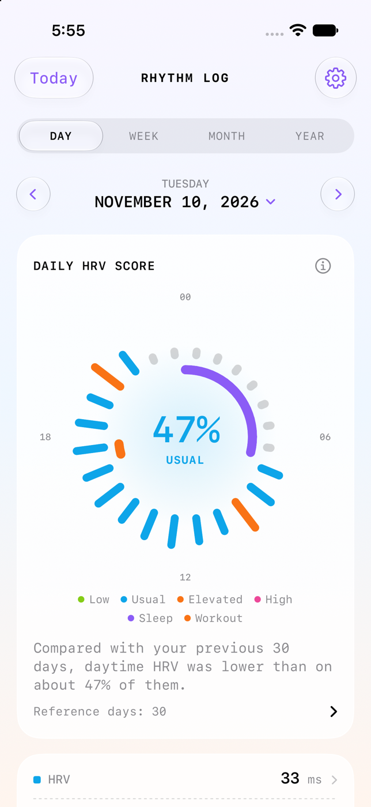
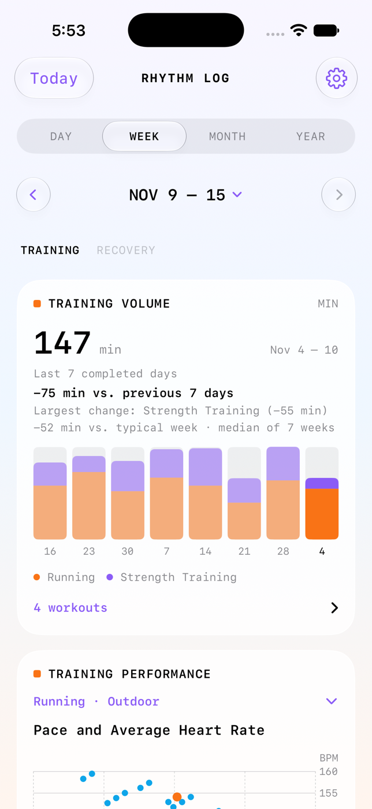

Get to know
your rhythm
Explore how your heart readings, workouts, and daily activity change over time. Start with the data you already have in Apple Health.


Start with Apple Health
Open Rhythm Log
Run the Xcode project on an iPhone. You can explore the same screens with sample records in the simulator. Open the installation guide.
Choose what to share
Tap Connect Apple Health. Allow the records you want to explore, such as heart rate, HRV, steps, and workouts. Sleep and overnight readings are optional. See the first-run screen.
Open a day with records
Tap the date to choose a day. Start with a day that includes a workout or several heart readings. Use Week or Month when you want to look for a pattern.
Rhythm Log reads the Health records you share on your iPhone. You can review or update access in Settings. A gap can mean there are no matching records or that the app lacks read access.
Explore your records
Day timeline
Hold a position on the 24-hour dial to inspect an hourly HRV estimate. Scroll for recorded heart rate, HRV, resting heart rate, steps, sleep stages, and workouts. Open a chart’s history or raw readings when you want to check the underlying data.
Training
Compare seven-day blocks of workout minutes by sport. Tap a bar, then a workout, to see heart rate and available zone times. Use the pace scatterplot and one-minute heart-rate recovery chart to compare workouts of the same type.
Recovery, with or without sleep
Start with daytime HRV, resting heart rate, and steps. Tap a date in the HRV chart to see its activity context. If you share sleep records, explore sleep timing by wake date, overnight HRV, and overnight vitals when recorded.
Calendars and history
In Month, switch between charts and calendars. A training date opens its workout list in Day; a recovery date opens the day’s timeline. Year shows monthly heart metrics.
Read the trend in context
The HRV score ranks eligible readings against your own recent history. A score near 70 means roughly 70% of reference values were higher. It has no clinical cutoff.
Check how many days contributed before comparing periods. For pace and heart rate, compare similar workouts and consider conditions such as heat, grade, and cooldown. Read the evidence and how the app calculates each view.